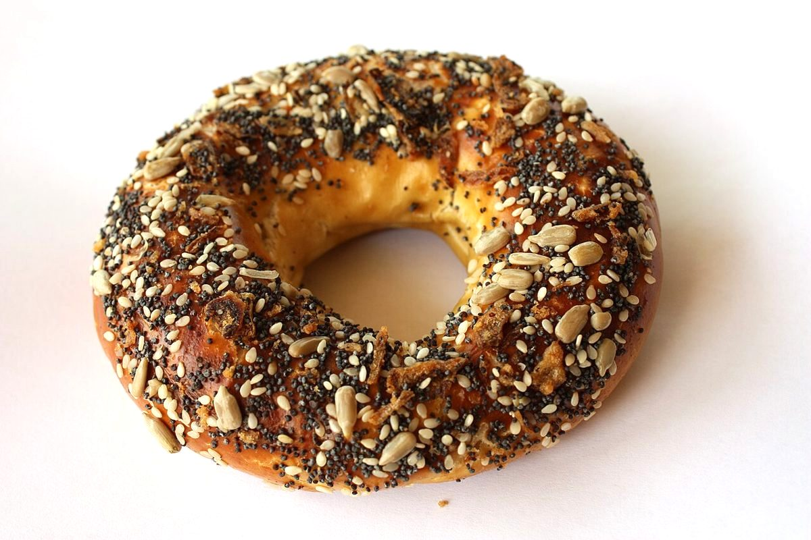

店のこと
THEMOL
T | HEMOL 「T」ひと文字と、残りの五文字。T字路やTシャツのTにも見える一文字です。
お店について確認できているのは、所在地とInstagramのアカウントだけです。
このページの「想像してみる」部分は、制作側が想像して書いたものです。お店の実際の様子・考え・メニューとは関係がありません。
確認できていること
- 店名は「themol」、業種はカフェ
- 所在地は千葉県東金市東金1051(〒283-0802)
- 電話番号はなし。連絡はInstagramから
- 営業時間・定休日・メニュー・価格・ご予約・駐車場は準備中

想像してみる
「T」を切り離すと
制作側の想像です。「T」だけを切り離すと、残りは「hemol」。ひと文字の違いで読み方が変わる様子を、このページの見出しで表しました。お店の紹介文はお店からの情報をいただいてから書き直します。

